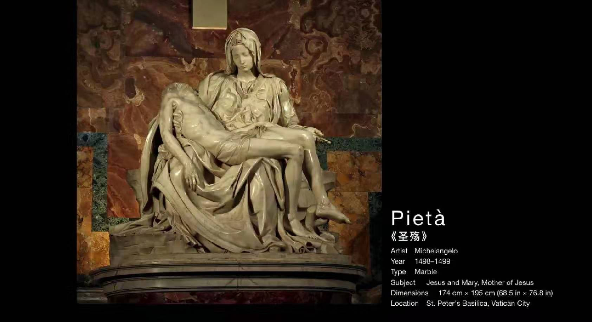

米开朗基罗
他的特点：崇拜男性肉体的理想美
绘画
末日的审判
一共有400多个裸体男人，每个都无比健硕。具体来看，肌肉的刻画是非常精准的。
采用了透视法，下面人少而且小，越往上人越大而且多，整个画面有上升的感觉，上面即天国。
因为是教堂的壁画，后人就在关键部位，填上遮羞布。
西斯廷天顶画,实在太大了
最著名的一幅–创造亚当
圣经中的创造亚当的故事，先是用泥土捏成人的形状，然后往他鼻孔吹气，于是就有了人
而米开朗基罗对这则圣经故事，有自己的解释。画中上帝很像人的大脑，他认为上帝赋予人思考与意识，才有了真实的人。
整个画面的焦点与戏剧性，在于两人的指尖，上帝的指尖雄武有力，而亚当的指尖向下，吃不上劲。他选取了将要触碰的瞬间，给人无限的想象空间，因为碰了就会有结果，抹杀人的好奇。
雕塑
圣殇
耶稣被从十字架上取下来，圣母玛利亚抱着耶稣，表达悲伤的画面，也称作‘圣母哀悼基督’。

整个雕塑使用三角构图，但还是能感觉到耶稣有点向下斜，就好像预示着耶稣的生命，在一点点流逝。
当面对自己的孩子躺在自己的怀里，是什么表情？非常的庄重，有古希腊的庄严与克制，说白了就是没表情。
比如受伤的尼俄柏的女儿，被刺中剑，身体因疼痛而扭曲，但是表情却是祥和，没有任何的痛苦。这就是古希腊高贵的特点。
当时米开朗23岁完成圣殇，由于太年轻，别人不相信，索性就晚上潜入馆内刻上了自己的名字，也是唯一一件留下签名的作品。
大卫像
圣经中非利士人与以色列人发生战争，非利士人派出歌利亚，一个全副武装，头戴铜盔，身穿铠甲的巨人。
以色列人派不出人来应敌，恰好大卫来看望军营中的哥哥，遇到此事，便自告奋勇，前来应战。因不适应铠甲，便赤膊上阵，手中拿着甩石机弦（投石器）。
一击便正中歌利亚头额，瞬间倒地。大卫冲上前去，用歌利亚的屠刀，砍下歌利亚的头颅。

大卫与歌利亚的故事，在基督教广泛流传，也成为犹太人教育子女，以弱胜强的典故。

米开朗的雕塑，描绘的是大卫准备下一秒就要战斗的紧张瞬间。这一瞬间是有戏剧性的，他同样没告诉人结果，只给出了战斗前一秒的瞬间，即永恒的状态。
他全神贯注，目光坚毅，表情却异常平静。脖子上的青筋暴起，整个身体处于高强的戒备状态。
他的手的比例有点不协调，略大，但不像是因为米开朗失误导致的。他雕刻大卫的大理石，是好几个雕刻家无法控制掌握的，所以才拿给他。可见在雕刻方面，米开朗是非常有技巧的，‘石头是有灵魂的’。
为什么会大些？目的就是让看起来弱不禁风的青年，其实充满着上帝赐予它的能量，才得以战胜比他身强百倍的歌利亚。
补充
spirit-精神,spir-吹，圣经中，对鼻孔吹口气，人就活了。
米开朗对女子的态度，把女的也画的跟男的一样，健硕的肌肉，还有腹肌。除了创造亚当，还有创造夏娃。可以看到亚当已经睡着了，夏娃近乎乞讨的方式请求。不仅如此，画外还有四个壮硕的男人，盯着夏娃看。一个对女子身体，都刻画成男人模样的男子，很难想象他不是gay了，况且他还一辈子没有娶过妻。
- 古希腊出土的雕像，其实是有颜色的，只不过时间久了，就剥落了。文艺复兴期间，模仿了古希腊失去颜色的大理石雕像，反而更有艺术造诣。
- 其他的大卫像
- 思考：没有颜色的大理石雕像，更适合人体的雕塑，人的皮肤，青筋，更可以表现情绪张力。